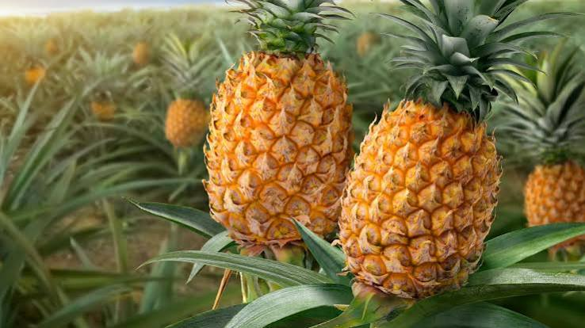

Sabores - Gastronomia y Tradicion
Saberes - Conocimiento Cientifico y Ancestral
Salud - Alimentacion y Bienestar
La piña es una fruta tradicional en las zonas cálidas de Córdoba, cultivada tanto en pequeñas parcelas familiares como en cultivos tecnificados, y muy apreciada por su sabor dulce y refrescante en la gastronomía regional.
Es una planta herbácea de hojas largas, rígidas y con bordes espinosos en algunas variedades, que crece a partir de una roseta basal. Su fruto es una infrutescencia formada por la fusión de muchas flores, de forma cilíndrica, cáscara escamosa y pulpa amarilla, jugosa y fibrosa, coronada por un penacho de hojas.
Se adapta bien a climas cálidos con temperaturas entre 22 y 30 °C, requiere suelos sueltos, bien drenados y ligeramente ácidos. Es tolerante a periodos cortos de sequía, aunque para un buen desarrollo del fruto necesita riego o lluvias regulares.
Con la piña se preparan jugos, dulces en almíbar, mermeladas y la tradicional chicha de piña, elaborada de forma artesanal en algunas comunidades. También se usa su cáscara para preparar refrescos fermentados de bajo grado alcohólico en las zonas rurales.
Se cultiva en distintas veredas y municipios de Córdoba, especialmente en terrenos con buen drenaje, siendo una de las frutas comunes en las plazas de mercado de la región del Bajo Sinú.
La piña aporta vitamina C, manganeso y una enzima llamada bromelina, conocida por sus propiedades digestivas. También contiene fibra y una buena cantidad de agua, lo que la hace ideal para hidratarse en climas cálidos.
La cosecha de piña suele concentrarse entre los meses intermedios del año, aunque en cultivos bien manejados es posible obtener producción escalonada durante varias épocas.
El cultivo de piña genera ingresos importantes para agricultores locales, tanto por la venta de fruta fresca como por su transformación en jugos, dulces y otros productos derivados de valor agregado.
Gracias a la bromelina, la piña favorece la digestión de las proteínas y puede ayudar a aliviar procesos inflamatorios leves. Su alto contenido de vitamina C también contribuye al fortalecimiento del sistema inmunológico.
La piña es protagonista de encuentros familiares y ferias populares en la región, donde su venta en trozos frescos o en jugos forma parte del comercio callejero tradicional de los pueblos del Sinú.